The Shape of the Trip
You land at KEF on Sept 10, 9:25 AM (YVR red-eye) and fly out Sept 29. The route runs clockwise: South Coast → Skaftafell → Eastfjords → North → then back southwest to Snæfellsnes → a gentle Reykjanes finish beside KEF. Svínafell unlocks Kristínartindar; Egilsstaðir is the East road hub; Akureyri provides Súlur and the last city-scale resupply; Arnarstapi drops you in the middle of the Snæfellsnes hikes; Reykjanes ends the trip 10 min from the airport. Within each base the dates are labels, not promises: choose days by weather, road status and fatigue. Bases 1–5 are booked; Base 6 remains to book. Click a hike card for its concise field reference.
Base 1 · Hella (booked ✔)
- Sept 10–15 · 5 nights · Una Cottage 1
- Waterfall fest, hot river, Þakgil & Landmannalaugar
- Hardest day: Þakgil big loop, ~19 km / ~800 m
Base 2 · Skaftafell / Öræfi (booked ✔)
- Sept 15–17 · 2 nights · Svínafell country home
- Kristínartindar ridge, Svartifoss, glaciers, Jökulsárlón
- Hardest day: Kristínartindar, 18.7 km / 1,065 m
Base 3 · Egilsstaðir (booked ✔)
- Sept 17–19 · 2 nights · cabin near Egilsstaðir
- Basalt canyons, alpine boulder fields, quiet fjords
- Big day: choose Brúnavík or snow-free Stórurð
Base 4 · Akureyri (booked ✔)
- Sept 19–23 · 4 nights · apartment in Akureyri
- Súlur summit, Mývatn, dark-basalt falls, Diamond Circle
- Self-guided summit: Súlur, ~11 km / ~900 m
Base 5 · Snæfellsnes (booked ✔)
- Sept 23–27 · 4 nights · Arnarstapi (hot tub)
- Arnarstapi coast, NP loop, Kirkjufell, Búðakirkja
- Challenge: Helgrindur ridge, ~9 km / ~900 m
Base 6 · Reykjanes (near KEF)
- Sept 27–29 · 2 nights · Keflavík / Njarðvík
- Keilir, eruption lava, geothermal tip, farewell lagoon
- 10 min from the terminal — zero drive-day risk
South Coast, from Hella
Sept 10 – 15 · 5 nightsSix days, one tab each — pick a day below. Big days (Þakgil and, only if access is confirmed, Landmannalaugar) alternate with lighter ones. Treat Sept 11–14 as a weather-driven deck rather than a fixed sequence. New moon lands Sept 11: any clear night, the cabin porch is your aurora seat.
Arrival & Seljalandsfoss
protect the red-eye dayLand 9:25 → collect the 4x4 → coffee/SIM → full shop at Krónan Selfoss → Hella and check-in/rest → Seljalandsfoss + Gljúfrabúi only if you are alert and the weather is useful. Do not commit to the Golden Circle after the YVR red-eye. Gullfoss and Brúarfoss are a Sept 12 alternative to Reykjadalur, not extra stops on top of it.
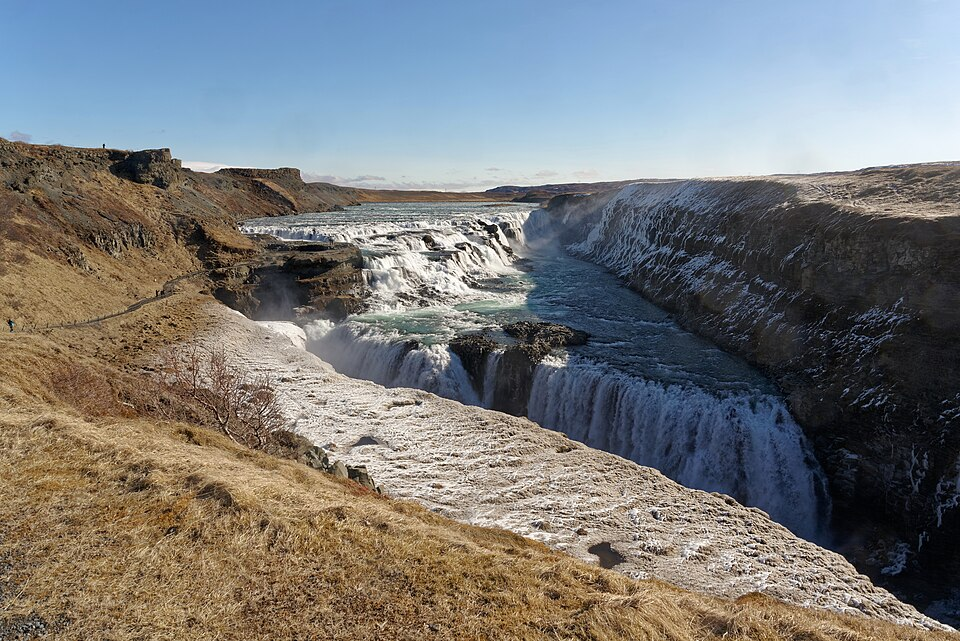
Gullfoss (+ Geysir)Sept 12 alternative, not a red-eye obligation
Watch Strokkur erupt twice, then Gullfoss's two-tier cataract from the upper rim. Use this as the Sept 12 weather/recovery choice if Reykjadalur is less appealing; do not stack both loops.
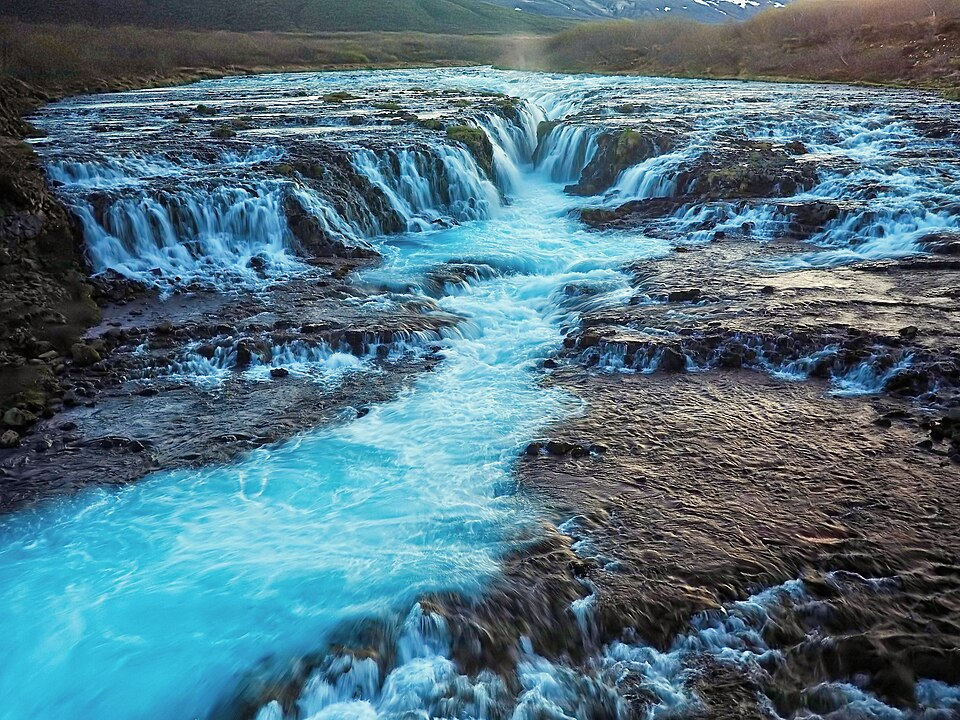
Brúarfoss, Miðfoss & HlauptungufossThe bluest water in Iceland — three falls, one riverside path
A flat riverside walk up the Brúará: Hlauptungufoss, then Miðfoss, finishing at Brúarfoss's impossibly electric-blue cascade. Pair it with Gullfoss on the Sept 12 Golden Circle version.

Seljalandsfoss + GljúfrabúiWalk behind the curtain — 25 min from the cottage
West-facing: sunset fires straight through the falling water. Don't miss Gljúfrabúi, hidden inside a slot 600 m north. Rain shell for the camera mandatory — and it's close enough to re-shoot any evening this week.
Waterfall Fest — Skógafoss & the Waterfall Way
go super early, own the fallsLeave the cottage ~05:40, shoot Skógafoss's base utterly alone at first light, then climb the 500 stairs and follow the Skógá upstream — a waterfall every ten minutes, crowds evaporating past the first kilometre. Hike patiently as far as legs allow (Skálabrekkufoss and beyond), picnic up top, amble back down mid-afternoon. Optional add-on 10 min east: Sólheimajökull's glacier snout. New moon tonight — aurora watch from the porch.
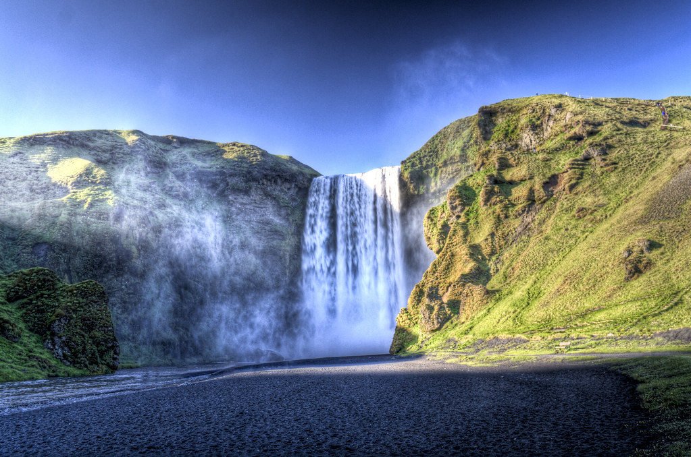
Skógafoss + Fimmvörðuháls "Waterfall Way"The icon at dawn, then 20+ falls nobody walks to
Arrive pre-dawn, own the 60 m curtain, then climb the stairs and keep going: Skálabrekkufoss, Steinbogafoss, Hestavaðsfoss and the endless upper valley. Turn around whenever legs vote. This is the day you brought the tripod for.
Recovery Choice
hot river or Golden Circle, never bothOption A: Reykjadalur from the signed car park, then at most two tiny stops such as Kerið or Urriðafoss. Option B: Þingvellir P2 → Geysir parking → Gullfoss parking → Brúarfoss parking. This is where the Golden Circle goes if you skipped it on arrival. Choose one version after seeing sleep, wind and rain.
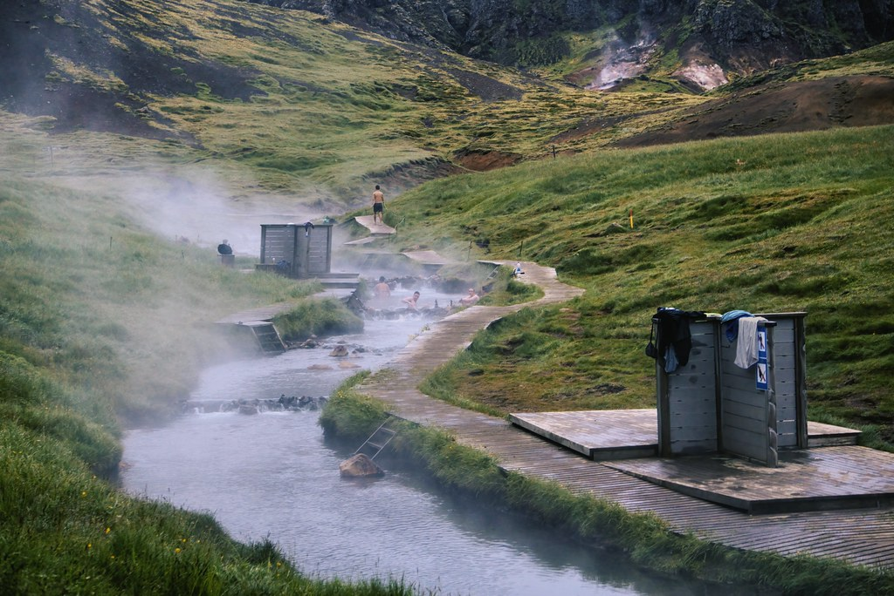
Reykjadalur Hot-River SoakHike an hour, bathe in a warm river
The steaming valley above Hveragerði: mud pots and fumaroles line the climb, then the river itself runs bath-temperature — walk upstream for hotter pools and fewer people. Towels, swimsuit, sandals. The definition of a recovery day.
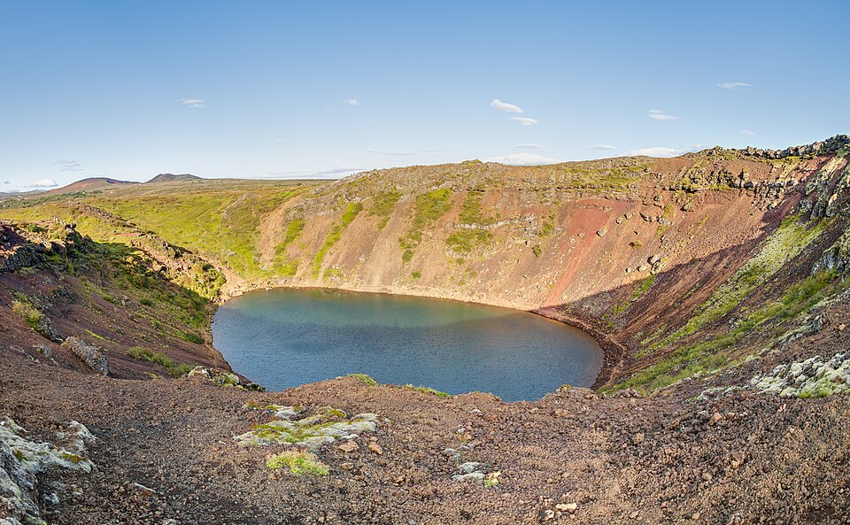
The easy-wonder menuZero-effort stops looped around the hot river
Kerið — a 3,000-year-old crater with oxblood walls and a teal lake (ISK 600). Urriðafoss — Iceland's most voluminous waterfall, 15 min from Hella, nearly always empty. Keldur — the country's oldest turf farm, 20 min east. Hveragerði — greenhouse town for lunch. Pick two, nap later.
Þakgil — the Big Loop
the challenge day of Base 1The mountain road behind Vík ends in a hidden green canyon under Mýrdalsjökull — and the big loop is the whole feast: Remundargil gorge, ridgelines between glacier and coast, hoodoos, caves, and hours of genuine solitude. Markers fade in and out; download the track offline. If weather argues, this day swaps freely with Sept 12 or 14 — Þakgil deserves visibility.
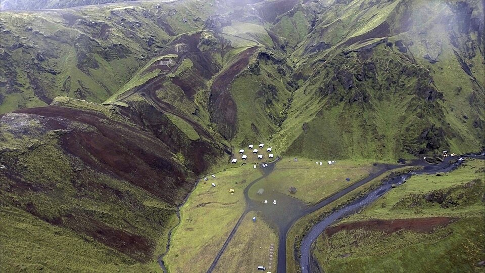
Þakgil Loop (19 km)Hidden canyons under Mýrdalsjökull — the challenge day
The full circuit: Remundargil gorge, glacier-edge ridgelines, hoodoo towers and the dining cave at the campsite. Wild, faintly marked, gloriously empty — offline map + track non-negotiable. Shorter bail loops exist from the same trailhead if weather turns.
Landmannalaugar
the rhyolite rainbow — Hella is the gatewayThis is a conditional late-season bonus. Go only if the rental contract allows F-roads, road.is shows F208-N open, SafeTravel has no warning, and the highland forecast is calm. Park at Landmannalaugar P1 before the river; do not cross the fords in a rental SUV. Choose Bláhnúkur + Brennisteinsalda or Grænihryggur, not both. September 14 fell inside the reservation window in recent seasons, so verify the 2026 rule and reserve if required.
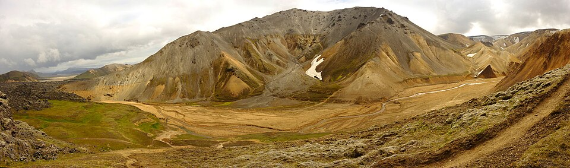
Landmannalaugar — Bláhnúkur & BrennisteinsaldaThe rhyolite rainbow loop
Bláhnúkur's black obsidian summit stares across at Brennisteinsalda — "the most colorful mountain in Iceland" — with the Laugahraun lava field between them. Steep, loose in places, endlessly photogenic. Finish in the hot river by the hut.
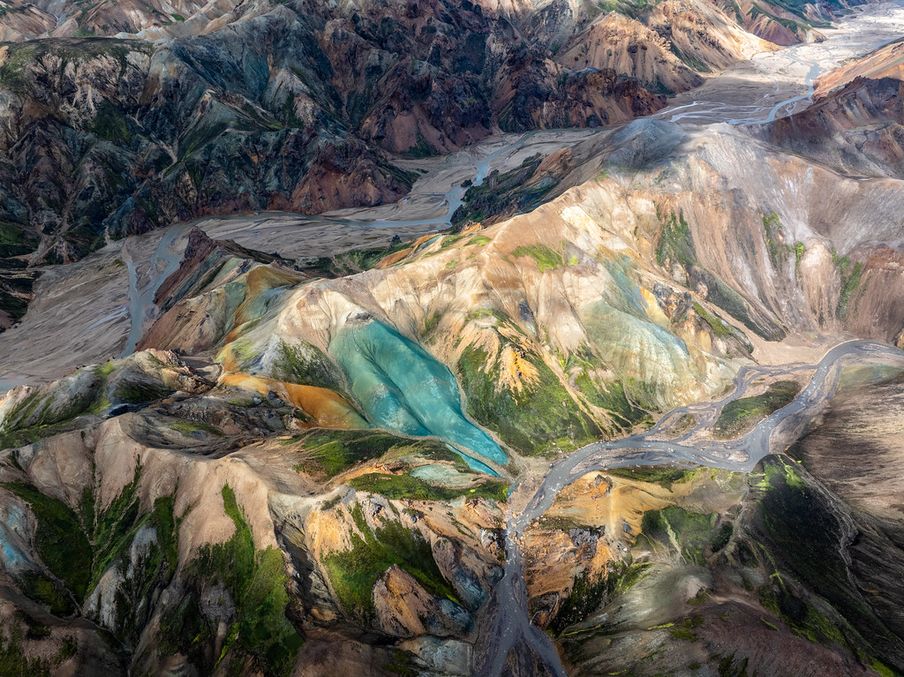
Grænihryggur via HalldórsgilThe hidden Green Ridge — bonus loop
Deeper into the reserve: a ridge of glassy green rhyolite most Landmannalaugar visitors never learn exists. Treat it as an alternative objective, not an extension after Bláhnúkur.
Transfer to Skaftafell — rest day on wheels
checkout 11:00 → Svínafell / Skaftafell, canyons en routeCheckout → Reynisfjara designated parking → grocery load at Krónan Vík → Fjaðrárgljúfur lower parking → Svínafell check-in 17:00. Skip Seljalandsfoss here if you used it on arrival. The glacier-snout stroll is optional only after check-in; the next day is the major ridge day.

Reynisfjara + Reynisdrangar Sea StacksBasalt columns, sea stacks, sneaker waves
The Reynisdrangar stacks, Hálsanefshellir's basalt cave, and the Atlantic showing off. Morning pass keeps you ahead of the Vík bus flow. Never turn your back on the water — the waves here are genuinely dangerous.
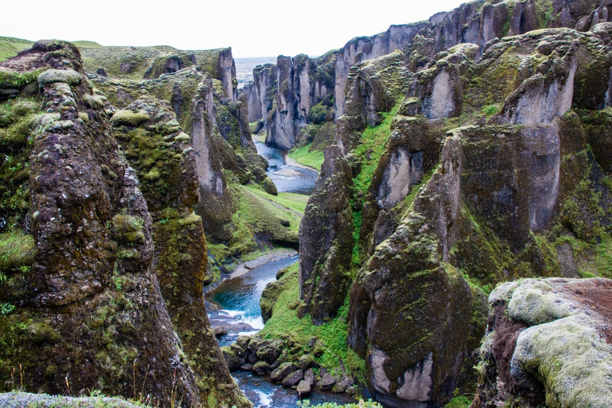
Fjaðrárgljúfur CanyonThe serpentine canyon — 20 min off Route 1
Two million years of meltwater carved this 100 m serpentine slot; the rim path ends at the Mögáfoss platform where the canyon doubles back on itself. Timed right you're ahead of the eastbound tour flow.
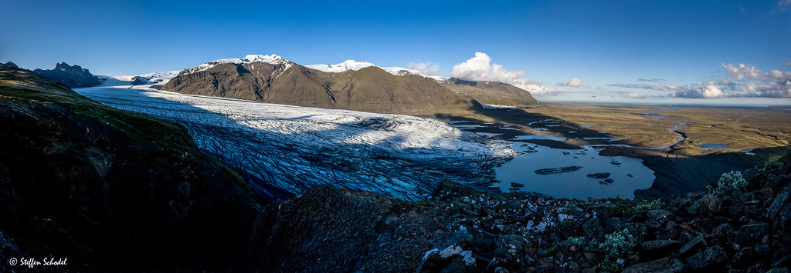
Svínafell / SkaftafellCheck-in 17:00 — the glacier base (see Base 2)
Country home under Öræfajökull, next to Svínafellsjökull, ~5 min from the Skaftafell trailheads. Settle in; if light and legs hold, walk out to the Skaftafellsjökull snout at dusk. Múlagljúfur + Jökulsárlón wait for the Sept 17 transfer east.
Skaftafell & Öræfi
Sept 15 – 17 · 2 nightsThe short glacier base carved out of the old 630 km one-shot dash east: instead of driving past Skaftafell at dusk, you sleep beside it and actually hike it. Canyons on the way in, the Kristínartindar ridge in the middle, more canyons + Vestrahorn on the way out.
Hella → Svínafell
scenic transfer, not a death marchUse the transfer for Reynisfjara and Fjaðrárgljúfur, then arrive rested. Buy food in Krónan Vík or Kjarval Kirkjubæjarklaustur; Svínafell/Skaftafell has no real grocery safety net. If the weather is clear at dusk, do the Skaftafellsjökull snout stroll from the visitor center.
Kristínartindar Ridge Day
the whole reason for this baseStart at Skaftafell Visitor Center parking and check the ranger/visitor-centre trail status before leaving. Cloud, strong ridge wind, fresh snow or a closure means Svartifoss + Sjónarnípa. Jökulsárlón after the full ridge is optional only if the driver remains alert; the lagoon can move to the transfer morning.
Svínafell → Egilsstaðir
Múlagljúfur first, Vestrahorn secondCheckout 10:00 is tight but workable: Múlagljúfur parking first, then Jökulsárlón only if skipped, Höfn fuel/food, Stokksnes/Vestrahorn, and the Eastfjords coast to Egilsstaðir. Do not add Hjallanes unless you intentionally drop either Múlagljúfur or Vestrahorn.
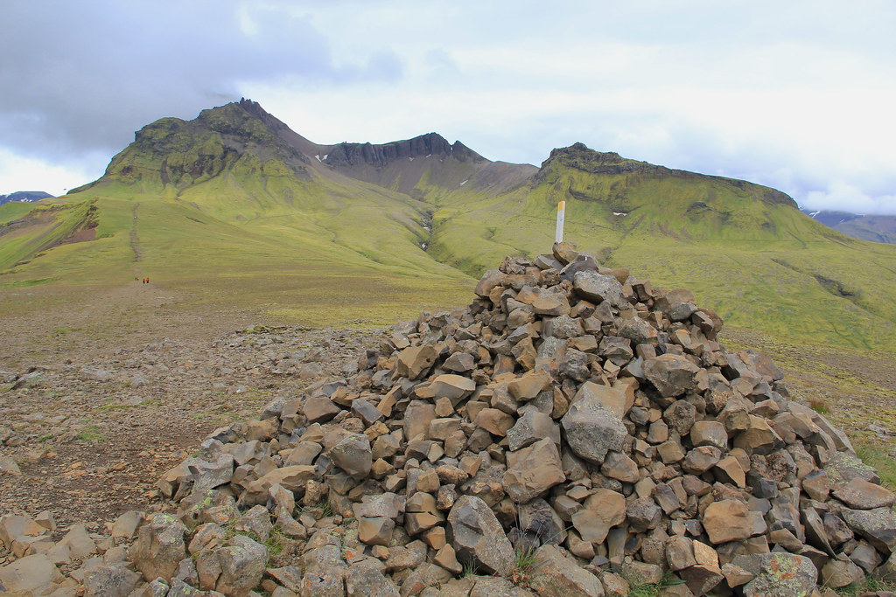
Kristínartindar via SvartifossThe big Skaftafellsheiði ridge loop — now finally hikeable
The full ridge above Sjónarnípa, with Svartifoss's basalt-column falls and the smaller Magnúsarfoss/Hundafoss right on the loop. A clear-window day: the top is exposed to katabatic wind off Öræfajökull. This overnight is exactly what unlocks it — it never fit a Hella base.
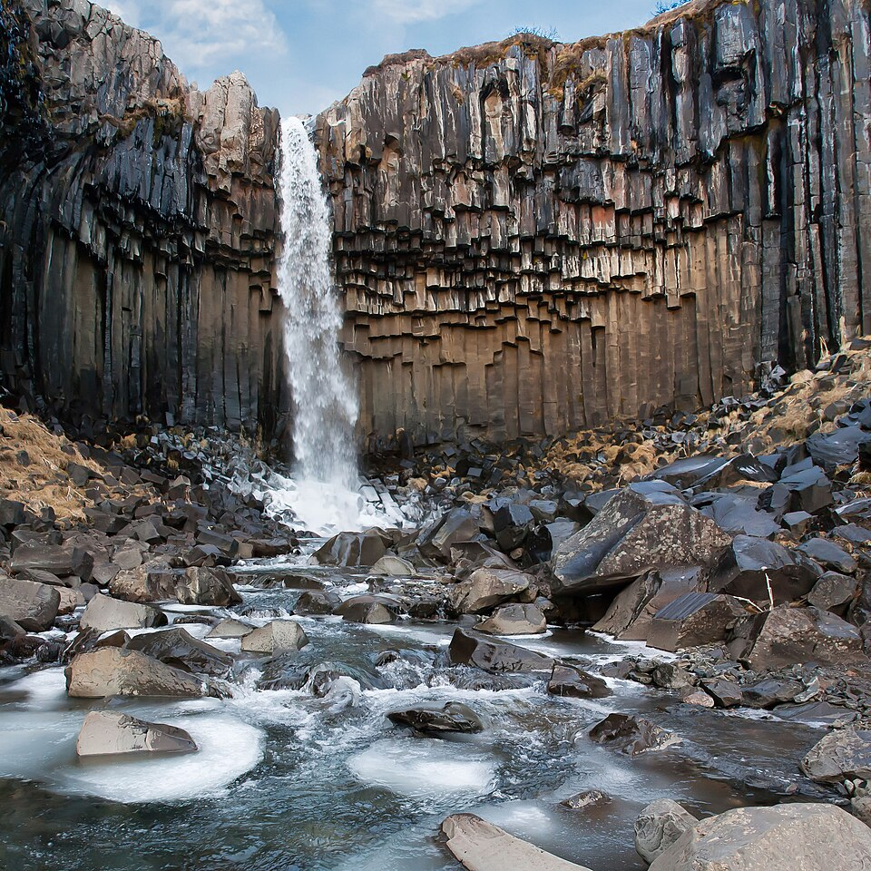
Svartifoss + SjónarnípaThe short version when the summit is socked in
The lower loop: Hundafoss → Svartifoss's black hexagonal colonnade → the Sjónarnípa overlook staring down onto the Skaftafellsjökull tongue. All the icons, none of the exposed ridge — the bad-weather plan for Sept 16.
Skaftafellsjökull glacier snoutMarked viewpoint path; never enter the ice
Follow the marked gravel path to the lagoon/viewpoint and stop at barriers. The glacier itself is crevassed and unstable: entering the ice requires a qualified guide and glacier equipment. Svínafellsjökull is a viewpoint only as well.
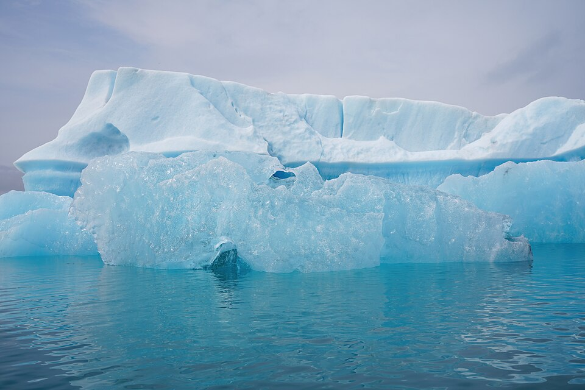
Jökulsárlón & Diamond BeachThe Sept 16 evening — icebergs under a thin-crescent sky
Reward for the ridge: the iceberg lagoon and its stranded diamonds on the black beach, 50 min east. The moon is only 18% on Sept 16 — a clear night here is a prime aurora + Milky Way frame. Fjallsárlón is the quieter alternative on the way.
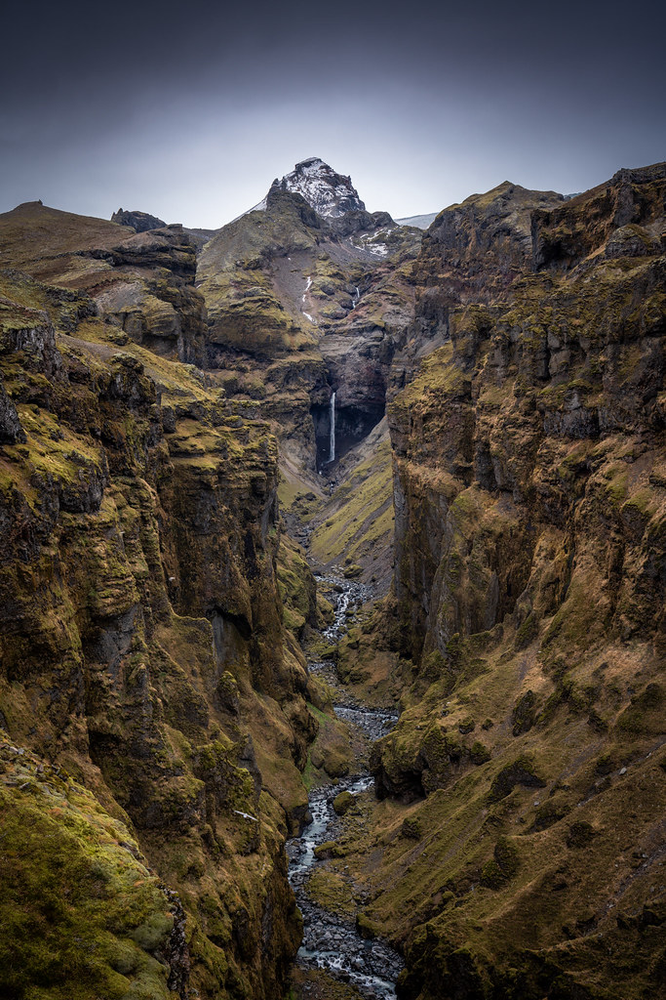
Múlagljúfur CanyonIceland's best-kept canyon — first stop heading east
The unmarked trail to Hangandifoss's hanging falls. Perfect first stop on the Sept 17 drive to the Eastfjords — even the 40-minute lower viewpoint delivers the money view. Rough 2 km gravel spur off Route 1; 4x4/high clearance.
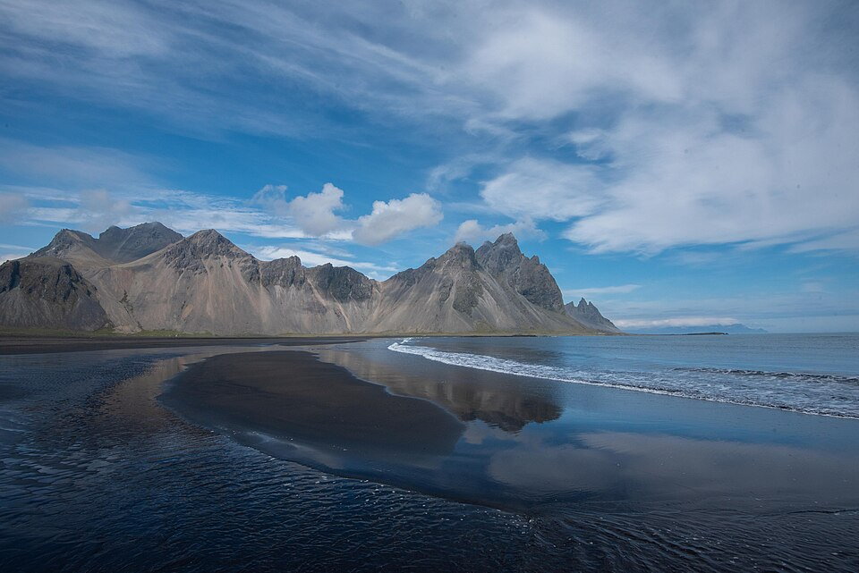
Vestrahorn · StokksnesThe Batman mountain over black dunes
Grass-tufted dunes, tidal mirror-flats, and a 454 m wall of spikes. Walk the Yellow Path loop and hunt reflections on the drive east — midday works, the drama is in the shapes. Höfn just before for langoustine + fuel.
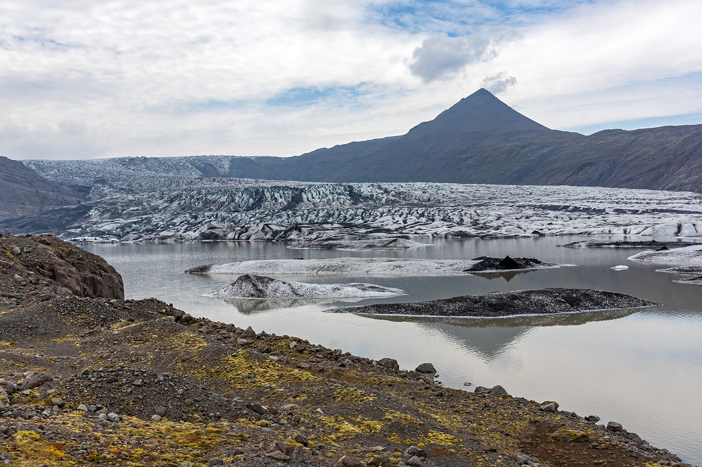
Hjallanes · Skálafellsjökull loopA proper glacier-margin hike near Höfn
From your notepad. A marked loop around the mountain, following the Kolgríma river to the Skálafellsjökull glacier tongue — wet, steep sections and stream crossings (waterproof boots + poles). A real leg-stretch on the transfer if daylight holds; competes with Múlagljúfur/Vestrahorn for time. (Flaajökull/Haukafell dropped — redundant with your Skaftafell glaciers.)
Day-by-day · Base 2
With Múlagljúfur and Stokksnes this is a 9–10 hour day, not a 19:00 guarantee. Checkout 10:00 → Múlagljúfur → Höfn fuel/food → Stokksnes → Eastfjords coast → Egilsstaðir resupply. If you leave Múlagljúfur after 14:00, shorten Stokksnes or skip it; if Jökulsárlón was missed, it replaces Stokksnes rather than joining both. Parking-focused transfer route. Follow local parking signs and check the posted payment method on arrival.
The Eastfjords
Sept 17 – 19 · 2 nightsTwo nights means the East needs discipline. Arrival evening is groceries, fuel and sleep unless you are genuinely early. On Sept 18 choose Brúnavík from Hafnarhólmi marina or Stórurð from the Vatnsskarð service cabin. The trailheads share Road 94, but the hikes are each a full objective. Stuðlagil competes with the Diamond Circle on the northbound transfer; it is not free.
Arrive Egilsstaðir
groceries, fuel, sleepAfter Múlagljúfur, Höfn, Stokksnes and the Eastfjords coast, default to groceries, fuel, check-in and dinner. Seyðisfjörður adds a mountain pass in both directions; use it only if you arrive early, remain alert and Fjarðarheiði is clear.
Borgarfjörður Eystri Hiking Day
pick the mountain objective by weatherDefault: Brúnavík, starting at the Hafnarhólmi marina parking beyond Bakkagerði; official route ~12 km / 5–6 h. Clear, snow-free substitute: Stórurð, starting at the service cabin on Vatnsskarð (65.5618, -13.9927); allow 5–6 h. Add Hafnarhólmi only as a short viewpoint; puffins have left by late September.
Egilsstaðir → Eyjafjörður
choose the canyon blockRecommended route: Dettifoss west parking → Selfoss walk → Vesturdalur/Hljóðaklettar parking → Goðafoss parking → Akureyri. Stuðlagil version: hike from Klaustursel east parking, then go directly toward Goðafoss/Akureyri; do not also promise yourself Hljóðaklettar and Ásbyrgi.
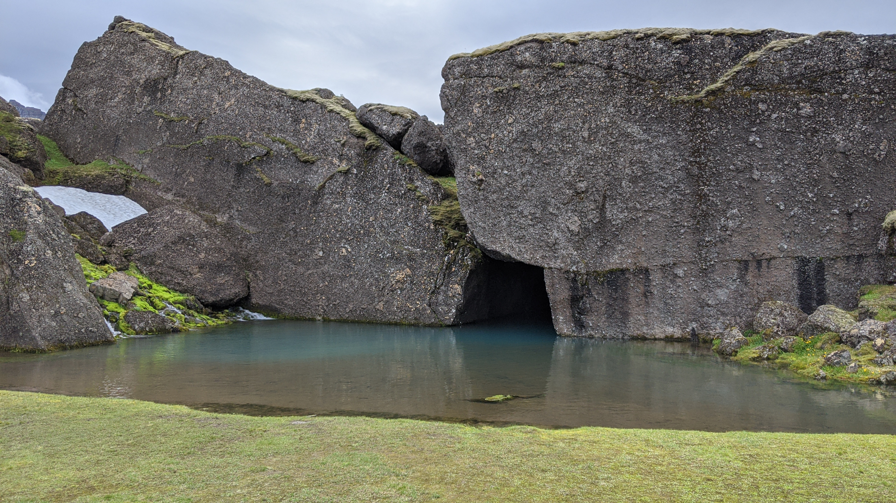
Stórurð — The Giant's BouldersTurquoise ponds among house-sized tuff blocks
Under the jagged Dyrfjöll "Door Mountains," a glacial valley strewn with colossal boulders and bright ponds. The official regional guidance says mid-July to the first appreciable autumn snow; September 18 requires a snow-free trail and clear visibility.
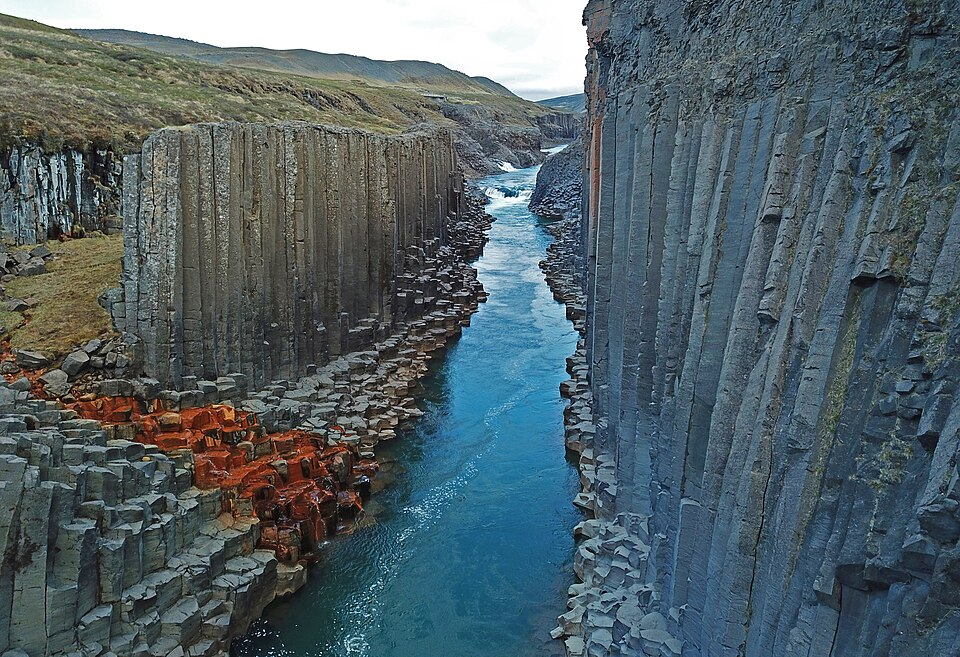
Stuðlagil Canyon — east bankBasalt columns over glacier-blue water
Everyone photographs it from the west viewing platform; almost everyone. Hike the east bank instead — it puts you at river level among the columns. Arrive at first light and the geometry is yours alone. September = low glacial flow = the water at its bluest.
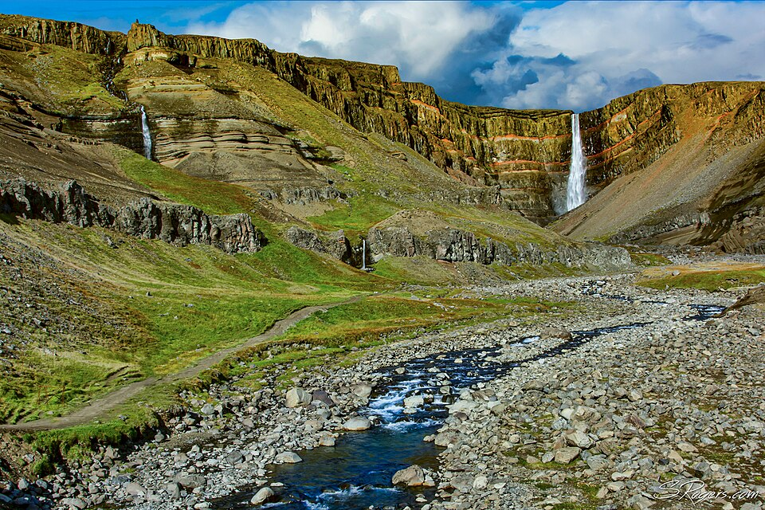
Hengifoss & LitlanesfossRed-striped cliff fall above a basalt colonnade
Two waterfalls, one climb: Litlanesfoss framed by towering hexagonal columns halfway up, then Hengifoss (128 m) pouring over red clay strata like a layer cake. Pairs perfectly with a Stuðlagil morning.
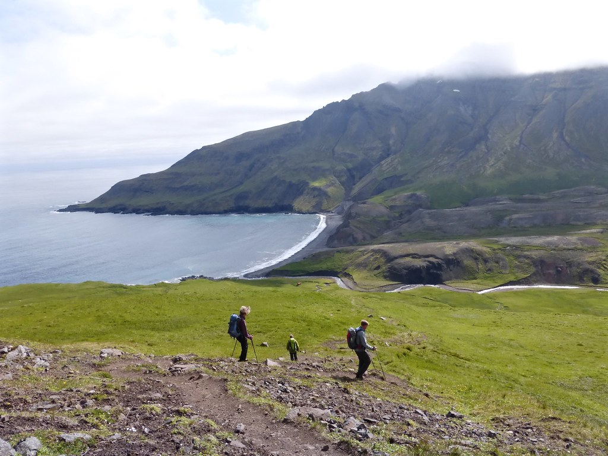
BrúnavíkOver the pass to an abandoned rhyolite bay
Start at Hafnarhólmi marina, cross Brúnavíkurskarð to the deserted bay, then return over Hofstrandarskarð. The river near the beach may require wading or careful stepping; use the bridge near Brotagil on the return.
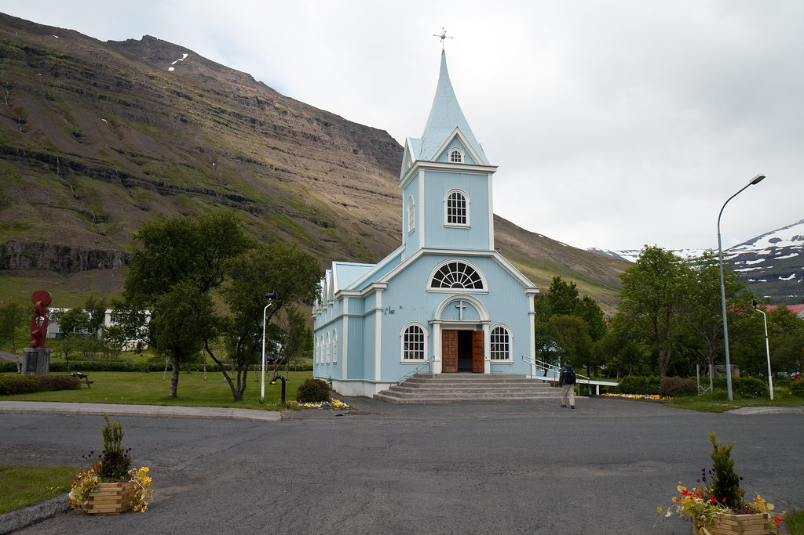
Seyðisfjörður day + VestdalurThe prettiest fjord town, earned on foot
Descend the switchbacks past Gufufoss, walk the rainbow street, then hike the Vestdalur valley trail past a staircase of waterfalls. Fjord walls block light pollution completely — a clear night here or at Stuðlagil is your Base 3 aurora play.
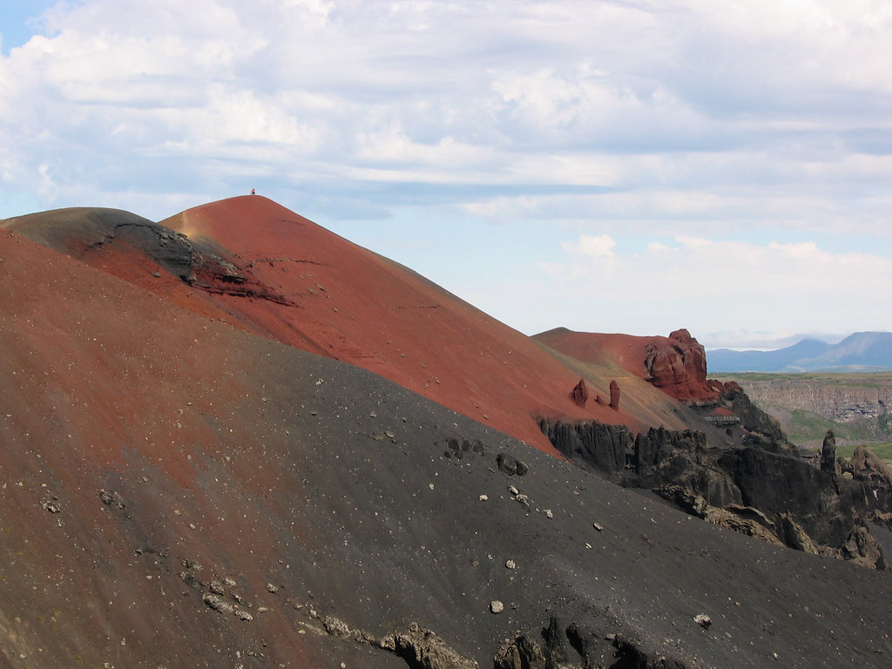
Rauðhólar Red Craters + HljóðaklettarThe red crater from your list, paired with Echo Rocks
The red crater is Rauðhólar in Vesturdalur/Jökulsárgljúfur: oxidized scoria hills above the Jökulsá canyon system, best combined with Hljóðaklettar's folded basalt formations. This is the keeper on the Dettifoss-to-North transfer if time gets tight.
Day-by-day · Base 3
Depart 7:00 across the Möðrudalur highlands. Dettifoss west side at ~10:00 (before Diamond Circle buses), with Selfoss included — 3.9 km, easy (AllTrails). Then ★ MUST · Vesturdalur: Hljóðaklettar "Echo Rocks" + Rauðhólar red craters — ~5 km loop, 1.5–2 h (AllTrails) → Ásbyrgi Eyjan rim trail, 4.8 km (AllTrails), skippable if time runs short — Rauðhólar is the keeper. Loop back via Hverir boiling mud flats and Mývatn (Mývatn Nature Baths if energy allows), catch Goðafoss at sunset (AllTrails), arrive Eyjafjörður ~20:30. Refuel Reykjahlíð; groceries next morning at Bónus Akureyri.
Eyjafjörður & the North
Sept 19 – 23 · 4 nightsThe North block now has a defensible self-guided summit, a highland-waterfall day and a recovery day. The volcanic transfer remains a menu. Kerling stays visible as a dream objective, but it is no longer treated as a normal hiking trail.
East → North Transfer
arrive alive, not exhaustedBest practical route: Egilsstaðir → Dettifoss west parking → Selfoss walk → Hljóðaklettar/Rauðhólar if time → Hverir quick stop → Goðafoss sunset → base. If you also do Stuðlagil east bank that morning, cut Ásbyrgi and Mývatn baths.
Akureyri Reset Day
rest + logistics + optional short summitUse this day to recover from the East–North transfer: laundry, groceries, equipment check, weather review and Forest Lagoon. Move Súlur here only if this is clearly the best calm/clear window; it is a full 4–6 hour summit, not a short add-on.
Súlur Summit Day
the marked, self-guided North summitDrive Súluvegur to its end and use the signed parking lot. The trail is marked with posts/cairns but crosses boggy ground and becomes steep. Turn around at Ytri-Súla if cloud, wind or snow makes the higher continuation unwise. File a SafeTravel plan for any late-September summit.
Aldeyjarfoss + Goðafoss
waterfalls first, backup summit secondAldeyjarfoss is the anchor only if road.is shows the north end of F26 open and the rental contract allows it. The official fallback is to stop where Road 842 ends and walk roughly 8 km return to the falls. Pair with Goðafoss only if timing remains comfortable; otherwise switch to Goðafoss + Mývatn/Dimmuborgir.
Akureyri → Arnarstapi (Snæfellsnes)
the long drive southRoll early down the Ring Road (Hwy 1). Big-shop in Borgarnes, and — if the day holds — hike Glymur in Hvalfjörður (7.2 km / ~430 m) before continuing onto the Snæfellsnes peninsula to Arnarstapi. Tired or late? Skip Glymur and go straight to the hot tub. (Full Base 5 detail below.)
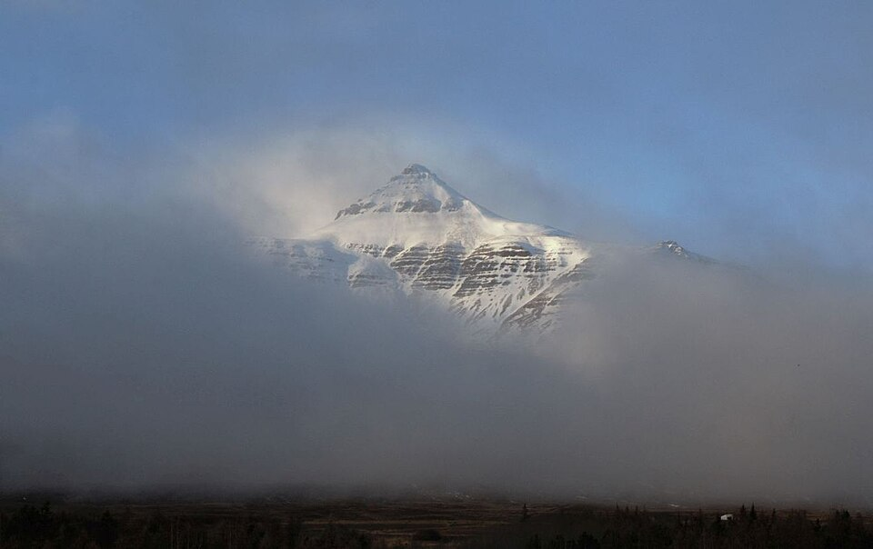
Kerling (1,538 m)Dream summit only with a qualified local guide
The local municipality explicitly warns that the route crosses a glacier that can be heavily crevassed and says it should not be attempted without a guide or experienced mountaineers. Keep it only as a pre-arranged guided upgrade; Súlur is the independent summit.
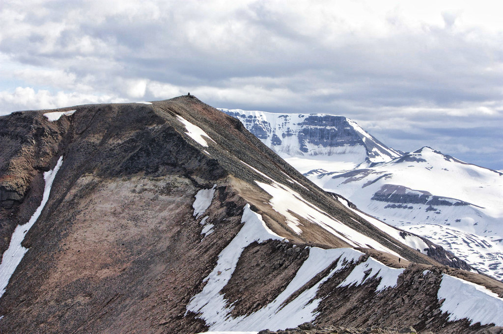
Súlur (1,213 m)Akureyri's marked, self-guided summit
The twin-summit peak standing over Akureyri: marked from the parking lot at the end of Súluvegur, with boggy ground and steep upper slopes. Ytri-Súla is the main objective; extend only if visibility, snow and energy remain sound.
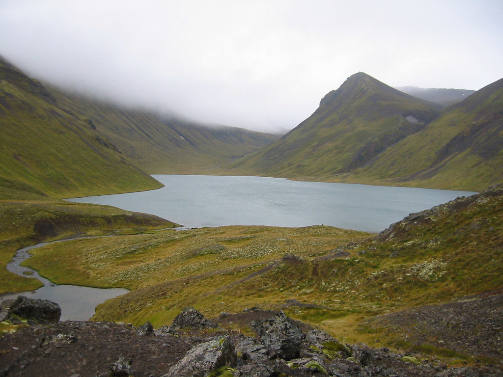
HraunsvatnÖxnadalur lake beneath the Hraundrangi spire
A steep loop from the farm Hraun in Öxnadalur up to a mountain lake (492 m) sitting under the dramatic 1,075 m Hraundrangi pinnacle. Optional flex-day hike — and since Öxnadalur is right on Route 1, it drops neatly onto the Sept 23 transfer west toward Snæfellsnes.
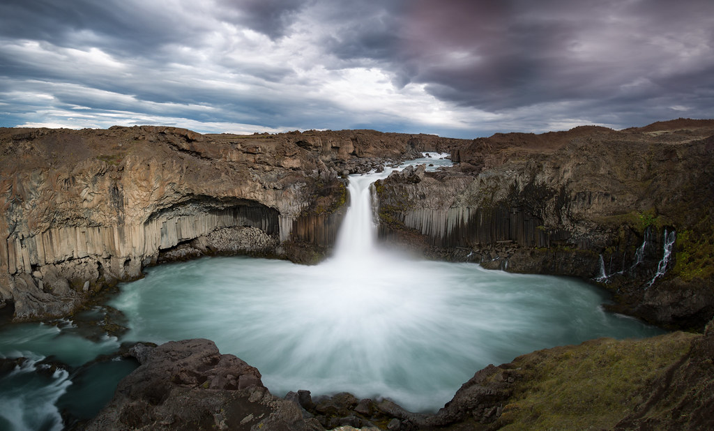
AldeyjarfossWhite water through black basalt — your 4x4's reward
The Skjálfandafljót punches through a jet-black colonnade — the best micro-contrast subject in Iceland. The highland approach keeps 95% of visitors away; at sunrise, likely 100%. Pair with Goðafoss on the drive back and Hrafnabjargafoss 4 km further upstream if the road is good.
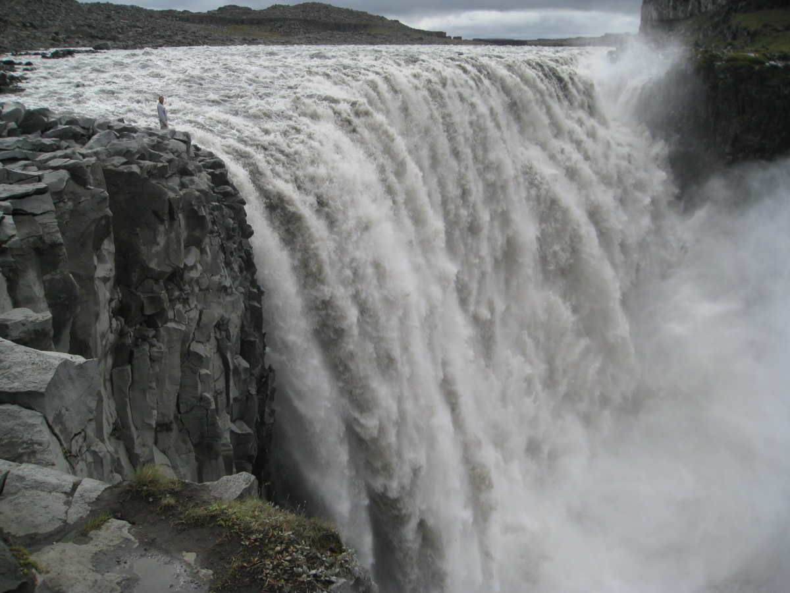
Dettifoss + Selfoss (west bank)Europe's most powerful waterfall, pre-bus
193 m³ of grey glacier water per second going over a 44 m edge — you feel it in your chest before you see it. Hit the west bank mid-morning ahead of the Diamond Circle circuit, and walk the extra kilometre to Selfoss, the wide horseshoe fall everyone skips.
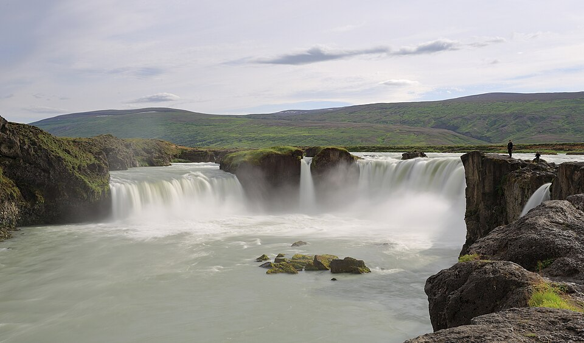
GoðafossWaterfall of the Gods — 30 minutes from base
The horseshoe where Iceland's lawspeaker threw his pagan idols in the year 1000. Close enough to home to treat like Fjaðrárgljúfur: show up at sunset or under aurora, whenever the sky performs. Both banks walkable; east bank for the classic wide shot.
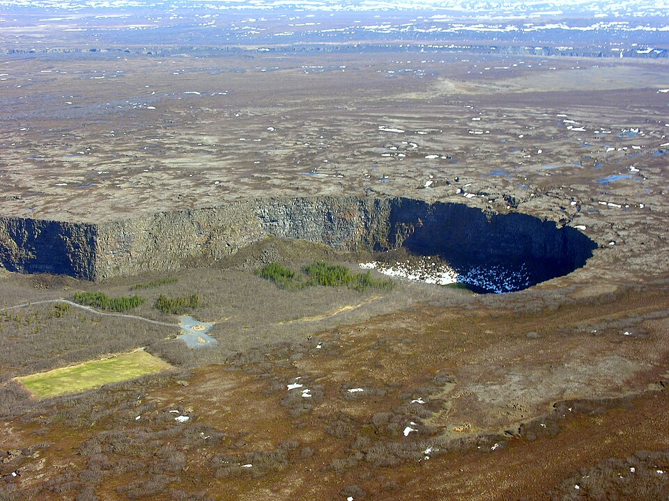
Mývatn & ÁsbyrgiVolcanic badlands + the horseshoe canyon
Hverir's boiling mud and steam vents, Dimmuborgir's lava castles, Ásbyrgi's sheer horseshoe (Eyjan rim walk) — mostly banked on the Sept 19 transfer, with Mývatn Nature Baths as the geothermal nightcap. Any clear evening: aurora reflected in Mývatn's pseudocrater pools.
Day-by-day · Base 4
Leave early down the Ring Road. Big-shop in Borgarnes; hike Glymur in Hvalfjörður if time and legs allow, then onto the peninsula to Arnarstapi. Protect daylight; the Fróðárheiði pass onto the south coast is the last stretch.
Snæfellsnes — Arnarstapi
Sept 23 – 27 · 4 nightsThe Westfjords swap: less driving, closer to KEF, and you still bag a genuine challenging summit — Helgrindur's unmarked ridge or the guided Snæfellsjökull glacier — plus the peninsula's postcard coast (Arnarstapi arches, Djúpalónssandur, Rauðfeldsgjá). The hot tub is your aurora seat for the last dark nights of the trip. Attractions per day below are recommendations — swap freely by weather.
Akureyri → Arnarstapi (via Glymur)
the long drive south, one big waterfallThe one long transfer of the tail. Roll early down the Ring Road, big-shop in Borgarnes, and — if the day holds — hike Glymur (Hvalfjörður, 7.2 km / ~430 m, log river-crossing + cave) before continuing to Arnarstapi. If you're tired or it's late, skip Glymur and settle into the hot tub.
The West Tip
arches, black beaches, a slot canyonRecommended: Rauðfeldsgjá gorge (5 min) → Arnarstapi → Hellnar coast walk → the Snæfellsjökull NP west loop (Djúpalónssandur, Lóndrangar, Saxhóll crater, Svörtuloft, Vatnshellir cave). All clustered at this end — an easy, scenic first full day to shake out the long drive.
Big Summit Day
the challenge of the blockRecommended (weather permitting): Helgrindur — the unmarked ridge scramble from the Lýsuhóll side (~25 min drive), your real summit here (GPS track, calm clear day). Alternative: a guided Snæfellsjökull glacier summit, or Stapafell straight above the house. Drizzle plan: swap to more coast + Búðakirkja.
Kirkjufell + South Shore
the icon + the flex slotRecommended: north over the pass to Kirkjufell & Kirkjufellsfoss (the icon), then loop back along the south shore for Bjarnarfoss, Búðakirkja (black church) and Ytri-Tunga seals. Or use this as the weather/rest flex day — soak, café at Hellnar, aurora from the tub. Swap with Sept 25 by forecast.
Arnarstapi → Reykjanes
short, easy repositioningA relaxed final transfer — south off the peninsula, fuel at Borgarnes, and down to the Reykjanes base near Keflavík. Optional en-route stop: Gerðuberg basalt columns just as you leave the peninsula.
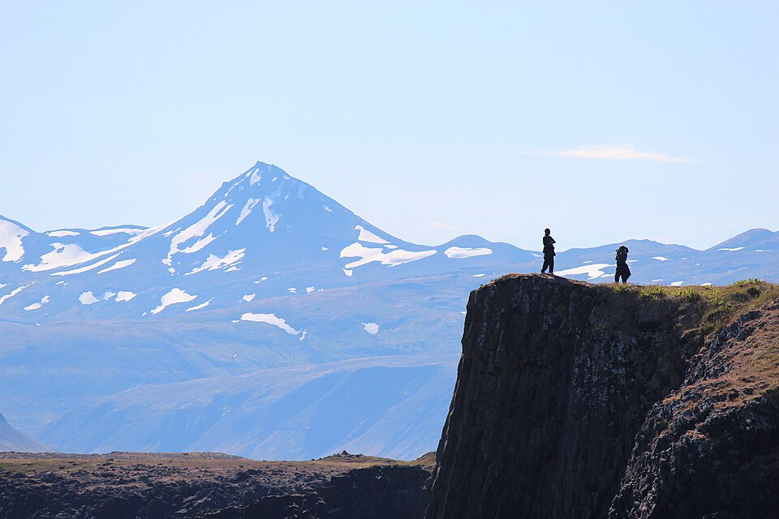
Helgrindur (Lýsuhyrna)The peninsula's wild, unmarked ridge
The serrated spine above the south coast — route-find up grassy ramps to a knife-edge ridge with ocean on both sides. Your real challenge here: GPS track, calm clear day, and turn back in doubt. This is the block's marquee summit.
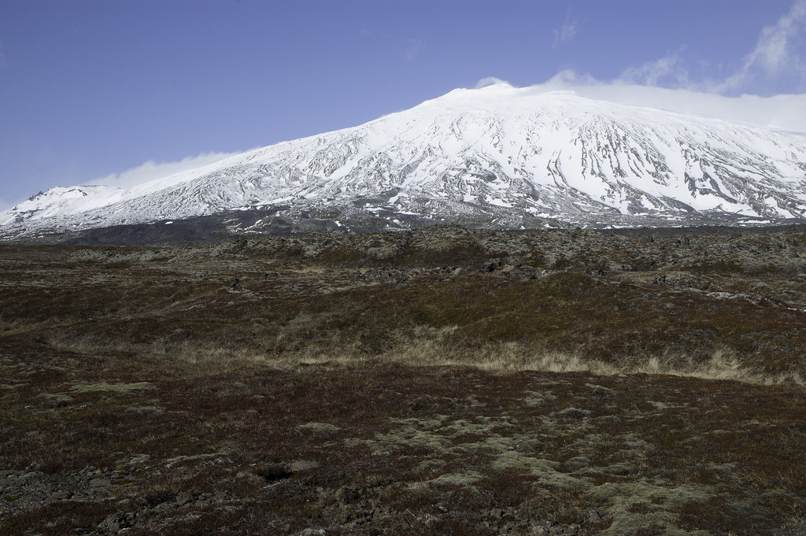
Snæfellsjökull (1,446 m)Jules Verne's glaciated volcano
The glacier-capped stratovolcano that closes the peninsula's western tip. Crevassed → a guided objective, not a self-guided scramble. The alternative big day if Helgrindur's forecast is marginal.
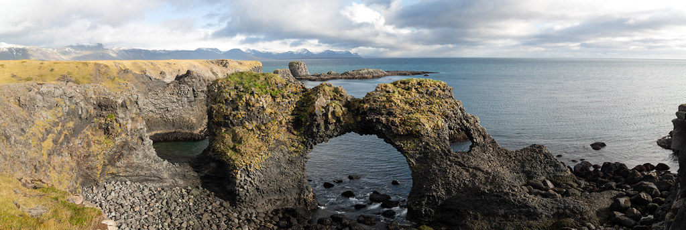
Arnarstapi → Hellnar coastBasalt arches, blowholes, fulmar cliffs
The lava-cliff path between two fishing hamlets: Gatklettur's stone arch, collapsed sea caves thundering below, Snæfellsjökull glowing behind. Coffee at the Hellnar cliff café before walking back. Golden hour turns the coast amber — starts steps from the house.
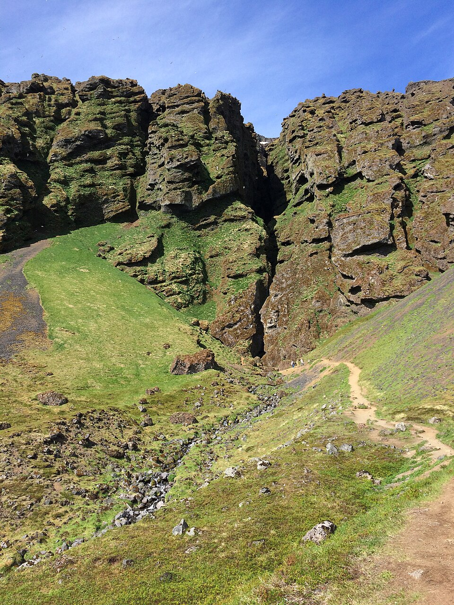
Rauðfeldsgjá GorgeSqueeze inside a mountain, wade up its stream
A crack in the Botnsfjall wall you can slip into and follow upstream — waterproof boots, the a7RV at high ISO in the green half-light. Two minutes off the road, missed by most.
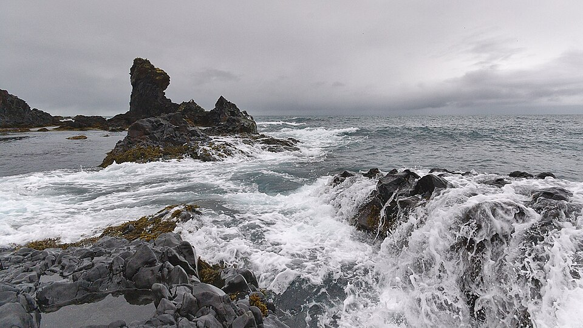
Snæfellsjökull NP west loopCraters, lighthouses, black-pearl beaches
Chain the tip: Saxhóll crater stairs, Svörtuloft's orange lighthouse, Djúpalónssandur's wave-polished pearls + shipwreck iron + lifting stones, Lóndrangar basalt pinnacles, and the Vatnshellir lava-tube cave tour.
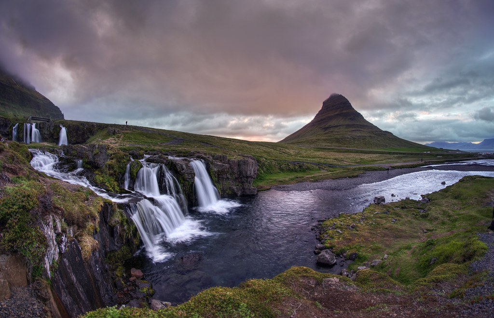
Kirkjufell & KirkjufellsfossIceland's most photographed mountain
Over Fróðárheiði to the north coast: the arrowhead peak with the Kirkjufellsfoss double-drop foreground. Best at golden hour; a clear night here or from the hot tub = aurora over the icon.
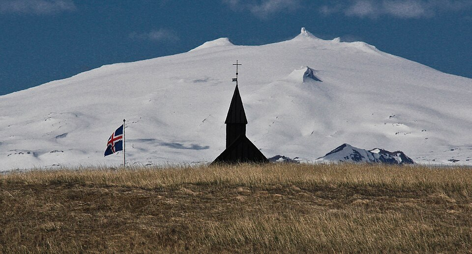
Búðakirkja & south shoreBlack church, Bjarnarfoss, Ytri-Tunga seals
The lone black timber church in the Búðahraun lava field — the night/aurora set piece. Pair with Bjarnarfoss (waterfall above Búðir) and Ytri-Tunga's resident seals for a relaxed south-shore afternoon-into-evening.
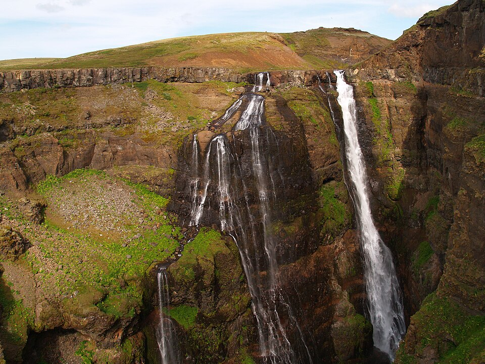
GlymurIceland's 2nd-tallest falls — on the drive in
The one big hike on the long Sept 23 transfer south — a canyon loop with a log river-crossing and a cave, to a 198 m cascade. Do it only if you leave Akureyri early and the legs are willing; otherwise wave and keep driving to the hot tub.
Day-by-day · Base 5 (recommended — swap freely)
Reykjanes & Keflavík
Sept 27 – 29 · 2 nightsTwo easy nights right by KEF: a cone-shaped summit (Keilir), fresh eruption lava, the wild geothermal tip, and a farewell lagoon soak — then coffee and a 10-minute drive to the airport. Attractions per day below are recommendations — swap freely.
Arrive + the Reykjanes Tip
volcanic-coast greatest hitsRecommended (afternoon/evening): the wild southwest tip — Gunnuhver steam vents, Reykjanesviti lighthouse, Brimketill lava-rock pool, the Bridge Between Continents, and Kleifarvatn + Seltún/Krýsuvík geothermal on the way. Verify open access first (some areas near Grindavík close).
Keilir · Lava · Lagoon
one summit, fresh lava, a soakRecommended: climb Keilir (the perfect cone, ~3–4 h) for the big Reykjanes view; if the Fagradalsfjall eruption sites are open + safe, walk the fresh lava fields; close with a Blue Lagoon or Sky Lagoon soak. All weather/volcano-dependent — swap for the tip loop if conditions say so.
Departure Morning
zero complexity → MilanCoffee, fuel, rental return, airport. If you wake early and the sky's clear, the Garður lighthouses are the only sane dawn detour; otherwise do nothing extra and enjoy the un-rushed exit.
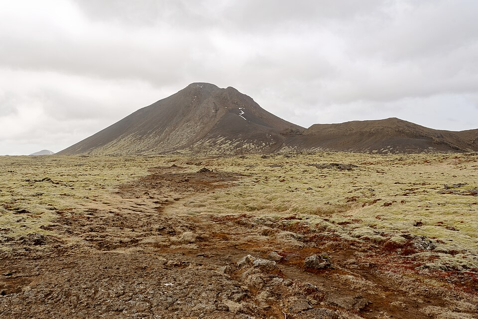
Keilir (379 m)The perfect Reykjanes cone
A cone-shaped volcano rising alone from the lava — a steep, short summit with a 360° view over the whole peninsula and out to sea. The one proper hike of the finale; a gravel track leads to the trailhead.
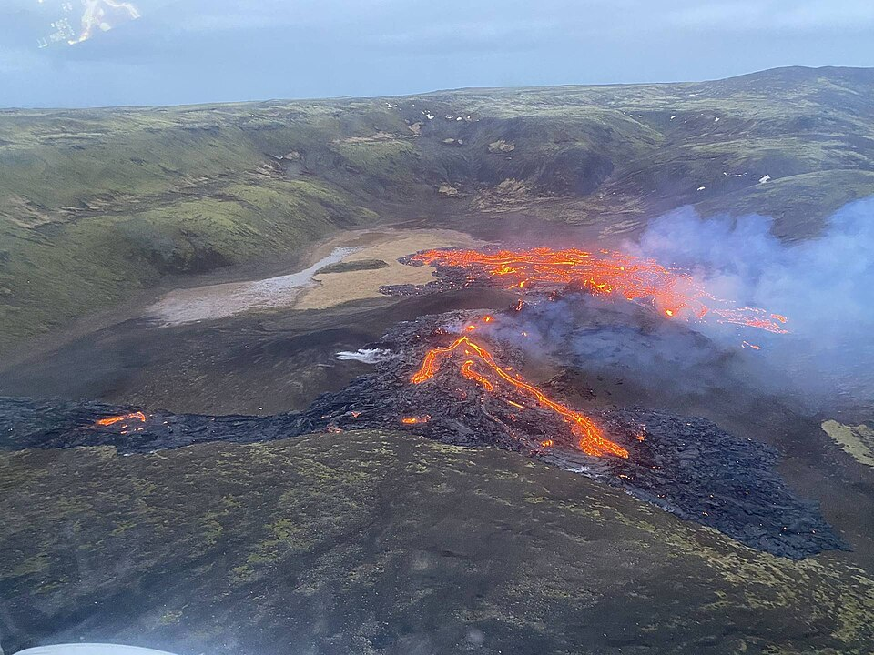
Fagradalsfjall lava fieldsWalk fresh 2021–23 eruption ground
Hike out over still-steaming young lava and the eruption craters — otherworldly. ⚠ Access varies: Reykjanes is volcanically active and trails/roads close around eruptions. Confirm on safetravel.is that morning, or swap for Keilir + the tip.
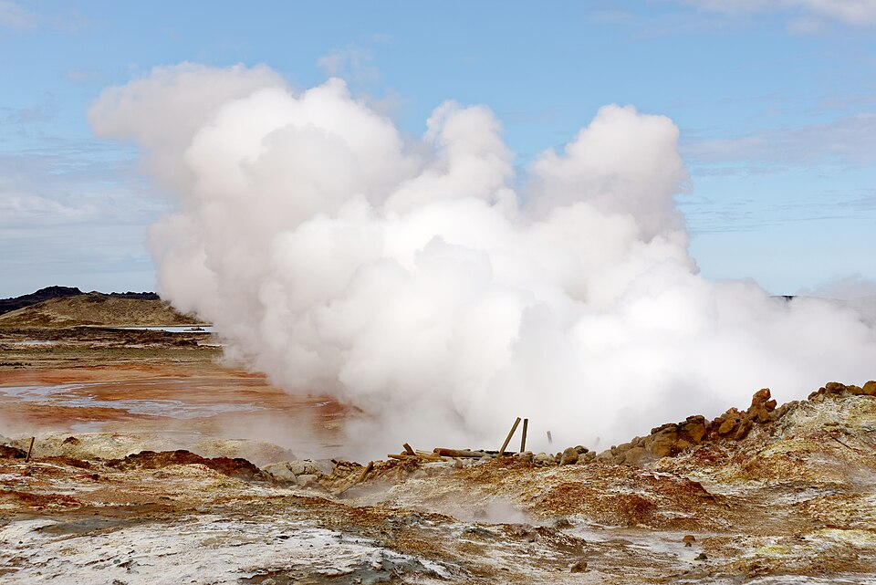
The Reykjanes tipGunnuhver · Reykjanesviti · Brimketill · Bridge
Iceland's raw southwest corner: Gunnuhver's roaring steam vents, the Reykjanesviti lighthouse on black cliffs, the Brimketill wave-carved lava pool, and the Bridge Between Continents spanning the mid-Atlantic rift.
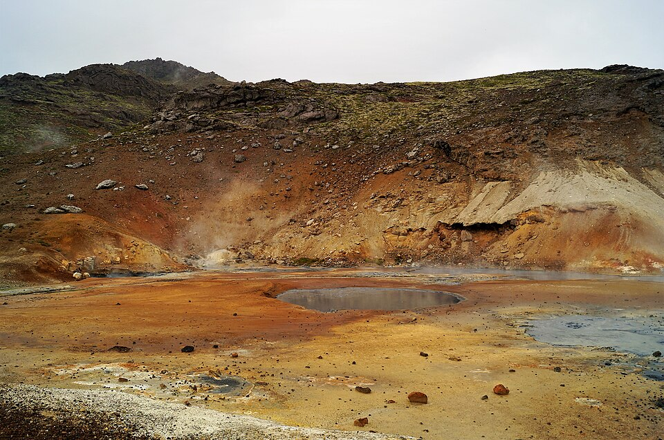
Kleifarvatn + SeltúnSunken lake + boiling mud fields
The brooding black-sand lake Kleifarvatn and the Seltún/Krýsuvík geothermal field — bubbling mud pots and sulphur-yellow ground on boardwalks. Moody in any weather; pairs with the tip loop.
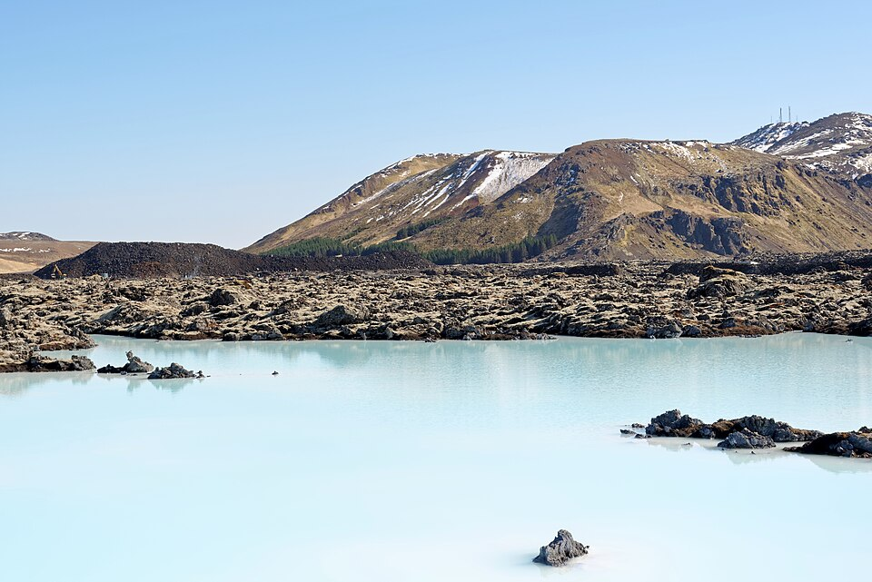
Blue Lagoon / Sky LagoonThe decompress before the flight
End the trip in warm geothermal water. Blue Lagoon is closest (~15 min) but opening depends on eruption status — check + book ahead; Sky Lagoon (Reykjavík, ~45 min) is the reliable fallback with its ocean-edge infinity edge.
Recommended Extras — the Tracker
Everything rated worth doing that didn't make the core schedule. Check things off as you go (saves in your browser); each slots into a specific day if weather, energy or curiosity opens a gap.
| Attraction | Where it slots | Why / cost | |
|---|---|---|---|
| Brúarfoss blue waterfall | Sept 12 Golden Circle version | Pair with Gullfoss; this replaces Reykjadalur rather than stacking onto it. | |
| Reykjadalur hot-river soak | Sept 12 recovery version | Signed trailhead parking; choose this or the Golden Circle. | |
| Sólheimajökull glacier snout | Sept 13, between Skógafoss & Reynisfjara | 20-min detour; walk to the ice edge or pre-book a crampon walk. | |
| Kristínartindar full ridge (18.7 km / 1,065 m) | ✔ IN the plan — Base 2, Sept 16 | The Skaftafell overnight (Svínafell) unlocked it: the full summit ridge above Sjónarnípa via Svartifoss. | |
| Rauðhólar + Hljóðaklettar red craters ★ | IN the plan: Sept 19 transfer | ~5 km loop, 1.5–2 h; skippable per your verdict — here if the day runs early. | |
| Eastfjords overflow: Hengifoss, Seyðisfjörður and the hike not chosen | Future longer East block | Two nights supports one full Road 94 hike; the rest remains a deliberate menu. | |
| Siglufjörður & Tröllaskagi loop | Base 4 flex (Sept 20 or 22) | Herring Era Museum, fjord tunnels, Hofsós pool; full day of mostly driving. | |
| Hvítserkur sea stack | Sept 23 transfer | +45 min; the basalt "drinking dragon" at mid-tide. | |
| Rauðasandur & Látrabjarg | A future Westfjords trip | The southern Westfjords — saved for a summer trip based near Patreksfjörður; puffins are gone by late September anyway. | |
| Glymur waterfall loop | ✔ IN the plan — Sept 23 transfer to Base 5 | 7.2 km / 430 m / ~4 h with cave + log river crossing — now the big hike on the drive south to Snæfellsnes. | |
| Snæfellsnes cluster: Helgrindur, NP loop, Arnarstapi, Rauðfeldsgjá, Búðakirkja | ✔ now Base 5 (Sept 23–27) | Promoted from the alternative to the real base — Arnarstapi puts you in the middle of it. | |
| Blue Lagoon / Sky Lagoon soak | Sept 28 (Base 6, Reykjanes) | The classic decompress before the flight; check eruption status for Blue Lagoon, Sky Lagoon as fallback. | |
| Hornstrandir — Hornvík, Hesteyri | A separate summer trip | Ferries stop by early Sept; the best backpacking in Iceland, June–Aug only. Next time. |
Provisions, Fuel & Survival Logistics
🛒 Food strategy
- Rule: big-shop at the cheap chains (Bónus, Krónan, Nettó) at each base handover; rural stores are sparse and pricey.
- Day 1: Krónan Selfoss — stock the Hella cottage after the flight.
- Sept 15: top-up at Krónan Vík or Kjarval Klaustur before Skaftafell — no store at Svínafell.
- Sept 17: Nettó/Bónus Egilsstaðir on the way into Base 3.
- Sept 19/20: Bónus Akureyri (biggest selection outside Reykjavík).
- Sept 23: big-shop Bónus/Krónan Borgarnes on the way to Snæfellsnes — Arnarstapi has no store (Ólafsvík ~30 min).
- Hike food: skyr, flatkökur, dried fish, chocolate, instant soup. Pack lunch every day — trailhead cafés basically don't exist.
⛽ Fuel discipline
- Rule of thumb: never below half a tank. Gaps between stations in the East and Westfjords exceed 100 km.
- Get an N1 key fob / Orkan app — most rural pumps are unmanned, card-only, and some reject foreign cards without a PIN.
- Critical fill-ups: Selfoss → Vík → Klaustur → Höfn → Egilsstaðir → Reykjahlíð (Mývatn) → Akureyri → Blönduós → Borgarnes → Ólafsvík → (Sept 27) Borgarnes → Keflavík.
- Planning quantity: ~3,200 km at 9 L/100 km is roughly 290 L. Reprice it against the actual rental and pump prices shortly before departure.
💧 Water & kit
- Tap water is glacier-grade everywhere. Carry two 1.5 L bottles each, refill daily; a thermos of hot drink earns its weight on summit days. (Ignore the sulfur smell in hot taps — cold is pristine.)
- Do not assume surface water is safe. Refill treated tap water; filter or treat any emergency stream water. Never drink silty glacial water.
- Layers: hard-shell top+bottom, insulation, hat/gloves — Súlur, Stórurð and Helgrindur can be wintry in late September.
- Microspikes (light ones) for early-morning frost near falls; headlamps for pre-dawn starts.
- Offline: download Iceland in Google Maps + AllTrails/Wikiloc tracks; cell coverage dies in exactly the places you're going.
🚙 Driving & safety
- Rental permission matters as much as traction: verify F-road coverage for Landmannalaugar and Aldeyjarfoss. Kvennaskarð needs a well-equipped jeep and local approval; an ordinary crossover badge is not enough.
- Check umferdin.is/road.is + vedur.is every morning; file safetravel.is plans for Súlur, Stórurð and any remote summit.
- September = first storms. Hold doors against wind gusts (the classic rental damage) and never drive in a yellow/red weather warning.
- Headlights on 24/7 (law). Sheep own the road.
September Weather — What to Actually Expect
Long-range forecasts for specific September 2026 days do not exist yet. September is the hinge between autumn and the first winter events: rain and wind dominate decisions, while snow can reach higher trailheads and mountain roads. Treat every highland or summit day as provisional until the evening before, then recheck at breakfast.
| Base (dates) | Day / night temp | Rain | Character |
|---|---|---|---|
| 1 · South Coast (Sept 10–15) | ~10–11°C / 5–6°C | ~140–170 mm · rain on 15–18 days | The wettest, mildest region — Atlantic-facing. Expect showers most days, dramatic clearing light between them (a gift for the camera), and strong gusts near Reynisfjara/Dyrhólaey. Early Sept = statistically calmest of your trip. |
| 2 · Skaftafell / Öræfi (Sept 15–17) | ~9–10°C / 4–5°C | ~110–140 mm · 14–17 days | Glacier-cool; Öræfi sits in Vatnajökull's variable rain shadow — showers with big clearings and katabatic gusts off the icecap. Kristínartindar's top is exposed: wind is the summit go/no-go. |
| 3 · Eastfjords (Sept 17–19) | ~9–10°C / 3–5°C | ~90–100 mm · 12–15 days | Often the driest quarter in westerly flow — Egilsstaðir sits in a rain shadow and gets Iceland's best föhn-warmed afternoons. Stórurð (600 m+) can see its first snow dusting late Sept. |
| 4 · North (Sept 19–23) | ~8–9°C / 2–4°C | ~55–75 mm · the fewest rain days | Driest region, coldest nights. Súlur can carry snow or ice; Kerling remains guide-only regardless of forecast. |
| 5 · Snæfellsnes (Sept 23–27) | ~9–10°C / 5–6°C | ~90–120 mm · 13–16 days | Milder and less exposed than the Westfjords, but the peninsula still makes its own wind — Helgrindur / Snæfellsjökull need a calm clear window, while the coast + NP loop work in most weather. The Fróðárheiði / Vatnaleið passes can catch the first snow. |
| 6 · Reykjanes (Sept 27–29) | ~9–10°C / 5–6°C | ~90 mm · variable | Windy, low-lying volcanic coast; two easy days where weather barely matters — the point is being 10 min from KEF. The wildcard here is volcanic activity, not rain. |
Light & Sky Calendar
🌅 Daylight windows
- Sept 10 (South Iceland): roughly 06:20 sunrise and 20:00 sunset — 13.6 h of light.
- Sept 29 (Keflavík): sunrise 7:34, sunset 19:10 — 11.6 h. You lose ~6 min/day; full table below.
- Golden hour is long and lazy at this latitude — roughly 1.5 h after sunrise and before sunset.
- Every "sunrise strike" in this plan means arriving at the trailhead/falls ~30 min before the listed sunrise.
🌌 Aurora playbook
- New moon Sept 11, full moon Sept 26 — darkest skies land in Bases 1–3; late-trip nights are moonlit (still shootable, different look).
- Nightly ritual: check the vedur.is aurora forecast (Kp + cloud map) at ~21:00; chase gaps in cloud, not Kp numbers.
- Pre-scouted foregrounds: Jökulsárlón / Diamond Beach (B2), Stuðlagil rim / Seyðisfjörður (B3), Goðafoss & Mývatn (B4), Kirkjufell + Búðakirkja + the hot tub (B5), Garður lighthouse (Sept 28–29). Full moon Sept 26 = moonlit foregrounds, not pitch black.
- Settings baseline: 14–20 mm, f/1.8–2.8, 5–10 s, ISO 1600–6400 (drop ISO under moonlight).
📷 a7RV field notes
- Waterfall spray is relentless: 3+ microfiber cloths, a rocket blower, and a rain cover; wipe between every frame at Skógafoss/Dettifoss.
- Polarizer for moss/canyon work (Múlagljúfur, Fjaðrárgljúfur); 6-stop ND for silky water at Aldeyjarfoss/Goðafoss.
- Cold kills batteries ~30% faster — keep spares in an inside pocket; 60 MP files eat cards, bring doubles.
- Crowd-dodging summary: icons at dawn or after 18:00; unmarked trails at midday; nobody is anywhere before 8 AM in September.
Sun & Moon, Day by Day
Computed for each base's coordinates (Iceland runs on UTC year-round). Moon % is illumination at midnight; ● marks the darkest aurora nights.
| Date | Sunrise | Sunset | Moon | Phase |
|---|---|---|---|---|
| Base 1 · Hella — the dark-sky jackpot | ||||
| Sept 10 | 06:22 | 19:59 | 4% | ● Waning crescent — near-black skies |
| Sept 11 | 06:25 | 19:56 | 1% | ● NEW MOON — best aurora night of the trip |
| Sept 12 | 06:28 | 19:52 | 0% | ● New — dark-sky window from the cottage |
| Sept 13 | 06:31 | 19:49 | 2% | ● Waxing crescent |
| Sept 14 | 06:33 | 19:45 | 5% | ● Waxing crescent |
| Base 2 · Skaftafell / Öræfi (Sept 15–16) — thin crescent, dark-sky over the glaciers | ||||
| Sept 15 | 06:29 | 19:38 | 11% | ● Waxing crescent — Jökulsárlón night window |
| Sept 16 | 06:32 | 19:34 | 18% | ● Waxing crescent — post-ridge aurora |
| Base 3 · Egilsstaðir (Sept 17–18) — crescent sets early, dark after ~22:00 | ||||
| Sept 17 | 06:25 | 19:21 | 27% | ● Waxing crescent |
| Sept 18 | 06:28 | 19:18 | 37% | Waxing crescent |
| Base 4 · Eyjafjörður / Akureyri — brightening gibbous evenings | ||||
| Sept 19 | 06:46 | 19:29 | 48% | First quarter — transfer day |
| Sept 20 | 06:49 | 19:25 | 58% | Waxing gibbous |
| Sept 21 | 06:52 | 19:21 | 68% | Waxing gibbous — Súlur weather window |
| Sept 22 | 06:55 | 19:18 | 78% | Waxing gibbous — moonlit Goðafoss works |
| Base 5 · Snæfellsnes — moonlit coast (times ≈, Arnarstapi) | ||||
| Sept 23 | 07:14 | 19:31 | 86% | Waxing gibbous — transfer day (Glymur) |
| Sept 24 | 07:17 | 19:27 | 92% | Waxing gibbous — west-tip coast |
| Sept 25 | 07:20 | 19:23 | 97% | Waxing gibbous — Helgrindur / summit day |
| Sept 26 | 07:23 | 19:19 | 100% | FULL MOON — Kirkjufell + Búðakirkja under silver light |
| Base 6 · Reykjanes — the breather (times ≈, Keflavík) | ||||
| Sept 27 | 07:24 | 19:16 | 100% | Full — arrive Reykjanes, tip loop |
| Sept 28 | 07:27 | 19:12 | 98% | Waning gibbous — Keilir / lava / lagoon |
| Sept 29 | 07:30 | 19:09 | 94% | Waning gibbous — departure |